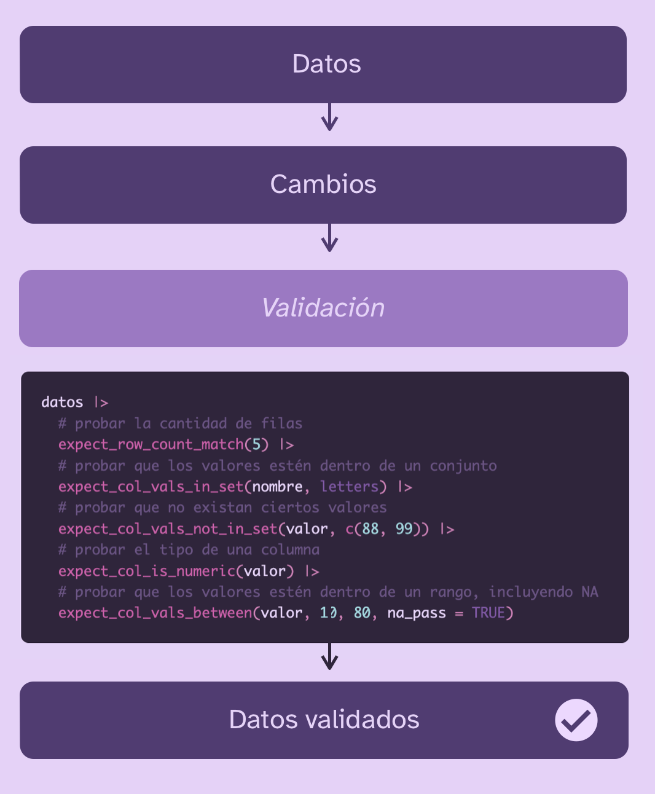

Validar datos para prevenir problemas y errores futuros
Estrategia simple para ir revisando los datos constantemente en tus pipelines de procesamiento de datos
28/8/2026
¿Alguna vez has tenido dudas sobre los datos que estás explorando?
Últimamente he estado trabajando con pipelines o flujos de procesamiento de datos extensos, y en cierto momento es imposible tener certeza de que los datos son como esperamos. También pasa que queremos confirmar que los datos tienen ciertas características luego de filtrarlos, cruzarlos, o transformarlos.
Con el paquete {pointblank} puedes olvidarte de las inseguridades cuando trabajes con datos!
Por ejemplo, veamos estos datos de prueba:
library(dplyr)
datos <- tibble(
nombre = c("a", "b", "c", "d", "e"),
valor = c("13", "24", "12", "nada", "78")
)
datos
# A tibble: 5 × 2
nombre valor
<chr> <chr>
1 a 13
2 b 24
3 c 12
4 d nada
5 e 78
Tenemos dos variables, ambas de tipo caracter/texto.
Normalmente, si queremos confirmar si existen datos perdidos (NAs), haríamos algo como:
library(dplyr)
perdidos <- datos |>
filter(is.na(valor))
cli::cli_inform("Existen {nrow(perdidos)} datos perdidos")
Existen 0 datos perdidos
Si bien esto sirve, hay mejores formas de hacerlo en R!
Publicaciones relacionadas

Con el conjunto de funciones expect_x() de {pointblank}, definimos lo que esperamos de la tabla de datos:
library(pointblank)
# esperar que no hayan datos perdidos en la columna
datos |>
expect_col_vals_not_null(valor)
La función expect_col_vals_not_null(), como su nombre indica, espera (expect) que los valores de una columna no sean inválidos.
En vez de preguntar cuántos datos perdidos hay, y hacer la revisión al ojímetro, decimos: esperamos que no hayan datos perdidos en la columna. Si la expectativa se cumple, todo bien y tu pipeline sigue corriendo! Pero si hubiera un problema con la expectativa, el cálculo se detiene para que puedas corregirlo.
Entonces: la idea es ir agregando pruebas a lo largo de tu pipeline, para ir confirmando las expectativas de la calidad de los datos, y avisarte mediante un error cuando las expectativas no se cumplan.

Hagamos un cambio inocente a los datos: convertir una columna a tipo numérico:
datos <- datos |>
mutate(valor = as.numeric(valor))
Warning: There was 1 warning in `mutate()`.
ℹ In argument: `valor = as.numeric(valor)`.
Caused by warning:
! NAs introduced by coercion
Recibimos una alerta (warning) que fácilmente podríamos ignorar: como la columna era de tipo texto, al convertirla a numérica introdujimos datos perdidos. El problema es que esta alerta puede quedar ahogada dentro de un pipeline extenso, y podemos no darnos cuenta del problema!
Si agregamos una nueva prueba de validación luego de ese cambio, ahora obtendremos un error que detendrá el pipeline si la calidad esperada de nuestros datos no se cumple:
datos |>
expect_col_vals_not_null(valor)
Error:
! Exceedance of failed test units where values in `valor` should not have been NULL.
The `expect_col_vals_not_null()` validation failed beyond the absolute threshold level (1).
* failure level (1) >= failure threshold (1)
Uno de los usos de {pointblank} es ir agregando pasos de validación de datos cada vez que sea necesario, por ejemplo:
- Al cargar datos externos
- Luego de modificar/limpiar los datos
- Luego de transformaciones complejas, como
pivot_wider()oleft_join() - Al actualizar los datos
- Antes de exportarlos o pasarlos al siguiente paso
Incluso podemos ir agregando varias pruebas de validación seguidas:
datos |>
# probar la cantidad de filas
expect_row_count_match(5) |>
# probar que los valores estén dentro de un conjunto
expect_col_vals_in_set(nombre, letters) |>
# probar que no existan ciertos valores
expect_col_vals_not_in_set(valor, c(88, 99)) |>
# probar el tipo de una columna
expect_col_is_numeric(valor) |>
# probar que los valores estén dentro de un rango, incluyendo NA
expect_col_vals_between(valor, 10, 80, na_pass = TRUE)
En el ejemplo anterior le agregamos 5 pruebas:
- Que la cantidad de filas sea la esperada, con
expect_row_count_match() - Que los valores estén dentro de un conjunto, con
expect_col_vals_in_set() - Que no existan ciertos valores, con
expect_col_vals_not_in_set() - Que el tipo de una columna, con
expect_col_is_numeric() - Que los valores estén dentro de un rango, con
expect_col_vals_between()
De esta manera, las pruebas nos ayudan a mantener la confianza en el procesamiento de los datos, ya que validamos constantemente que los cambios en los datos no introducendo problemas que podrían pasar desapercibidos, o que serían tediosos de ir probando manualmente todo el rato. También es muy útil para confirmar que los datos siguen siendo los esperados luego de actualizarlos.
Si te interesa esto, revisa el tutorial completo de validación de datos con {pointblank} aquí:
Publicaciones relacionadas